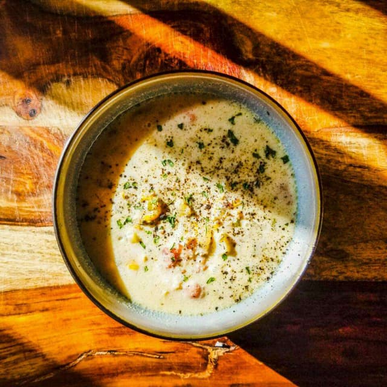

Maine Clam Chowder

Ingredients
- 2 quarts shucked clams, with liquid
- 8 slices bacon, cut into small pieces
- 3 large russet potatoes, peeled and cubed
- 1 large onion, chopped
- 2 stalks celery, diced
- 1 (8 ounce) jar clam juice
- 2 cups half-and-half cream
Directions
- In a small saucepan, heat clam juice and peeled
potatoes. Bring water to a boil and let simmer until
tender, about 15 minutes.
- Place bacon in a large stock pot. Cook over
medium high heat until evenly brown. Stir in onions and celery.
Cook until vegetables are soft.
- Add potatoes, clam juice and clams to the stock pot. Heat until simmering.
- In a separate pot, gently warm (do not boil) half and half.
Pour warm half and half into the stock pot and heat just until warmed through.
Do not boil the chowder or the cream will separate. Serve hot